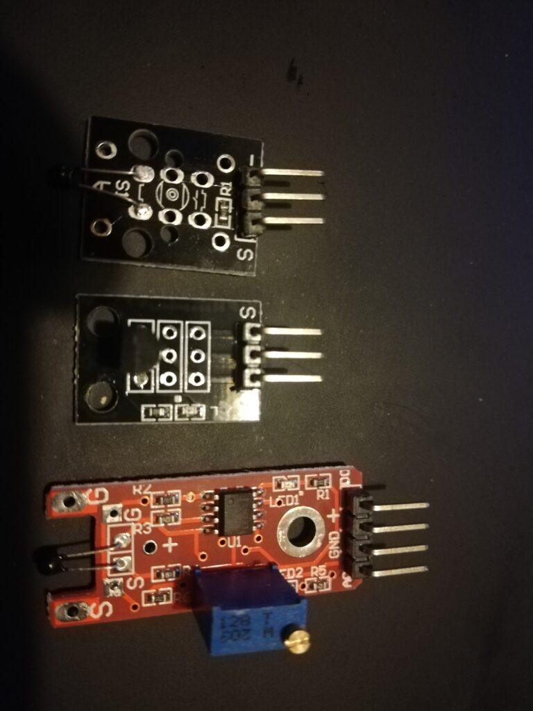
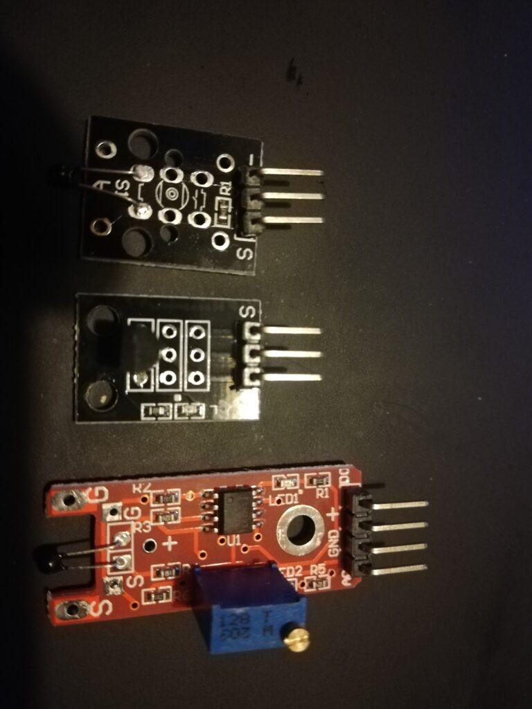
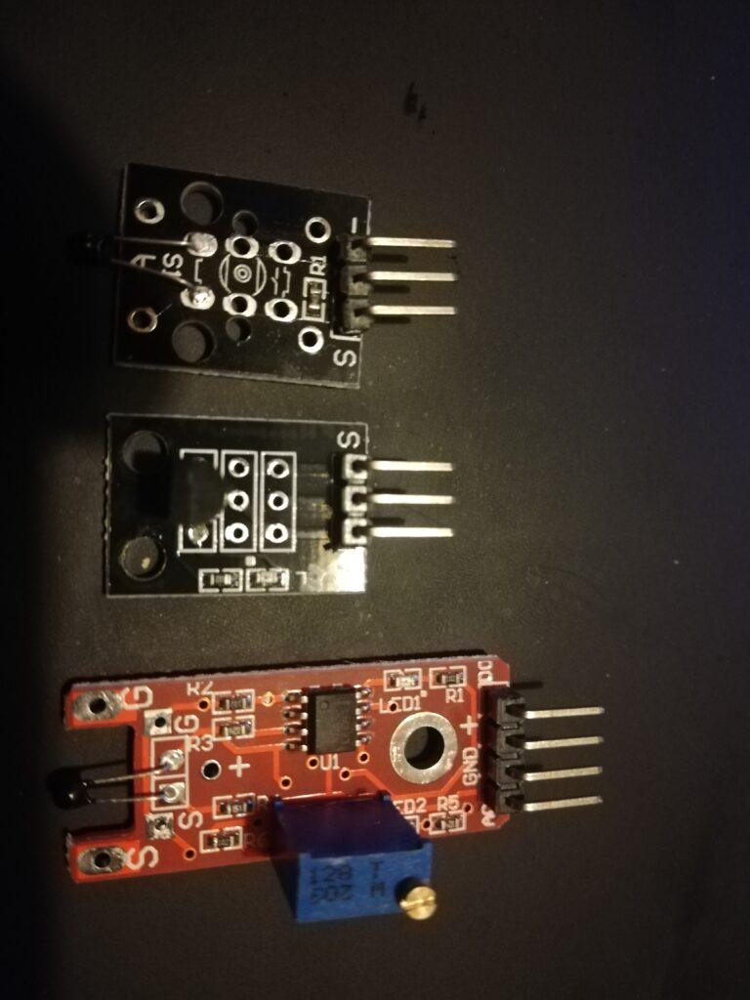
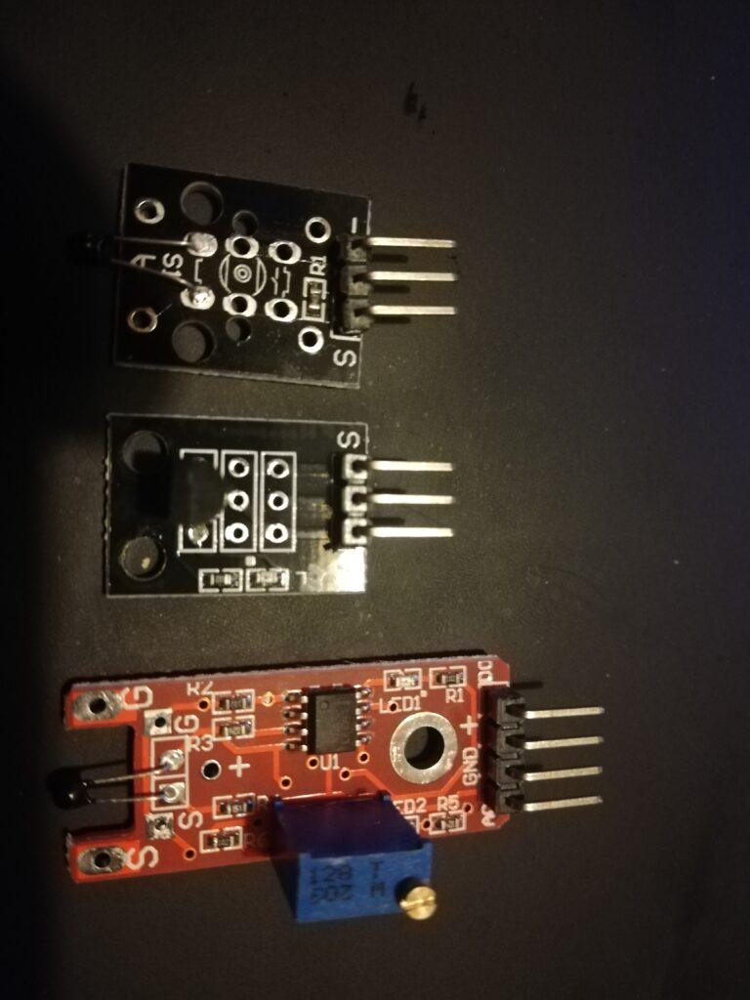

 

This library enables the integration of analog and digital temperature sensors with the ESP8266. Developed
during the INTIVE PATRONAGE 2020 project in Szczecin, it leverages MQTT for real-time data transmission to a
server, allowing for efficient temperature monitoring and management.
Features:
– Support for analog and digital temperature sensors
– MQTT integration for data transmission
– Real-time temperature monitoring
Check out the project on GitHub: Temperature Sensor on GitHub
Back to Portfolio